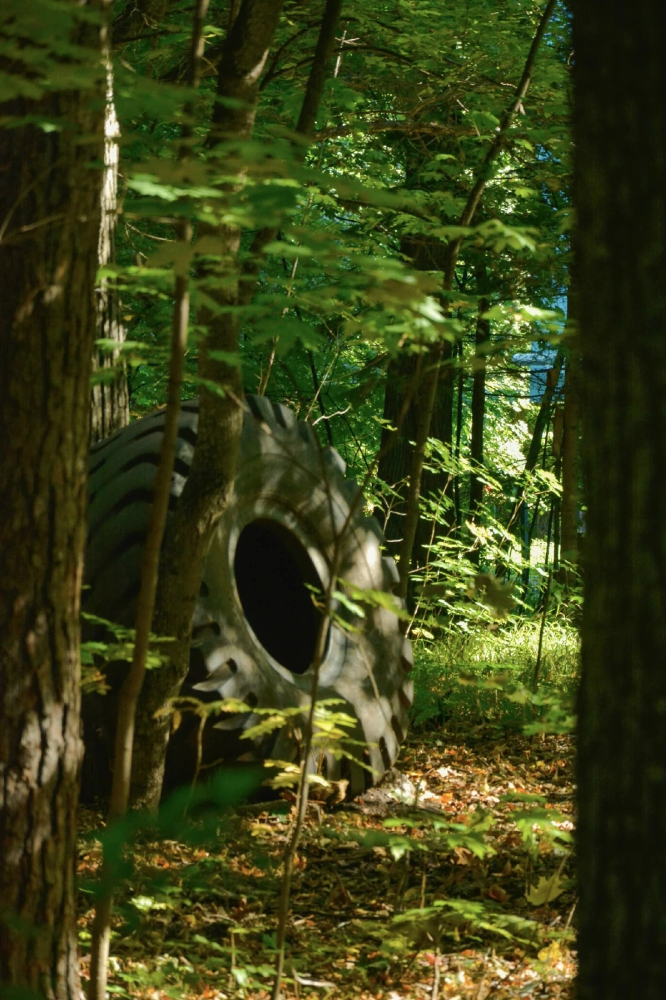

ЦВЕТОВАЯ ЛАБОРАТОРИЯ 01
Палитра, которую
уже собрал кадр.
Найдите главные оттенки фотографии и заберите их в свой проект.
ИСТОЧНИК
Фотография

Перетащите фотографию сюдаили выберите файл на устройстве
Пример из фотодневника Lastie
ИЗВЛЕЧЕНО ИЗ КАДРА
Оттенки
Фотография обрабатывается локально и не отправляется на сервер.Для быстрого анализа размер кадра уменьшается.